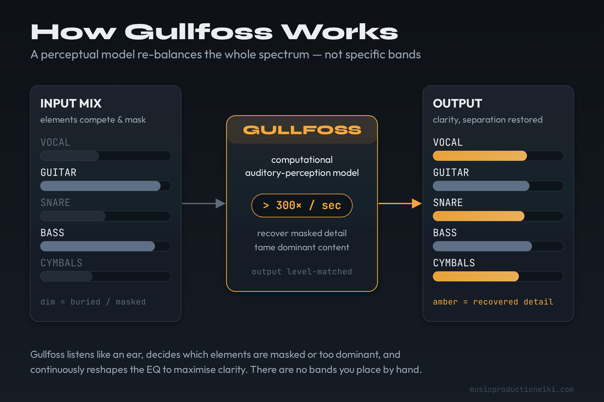
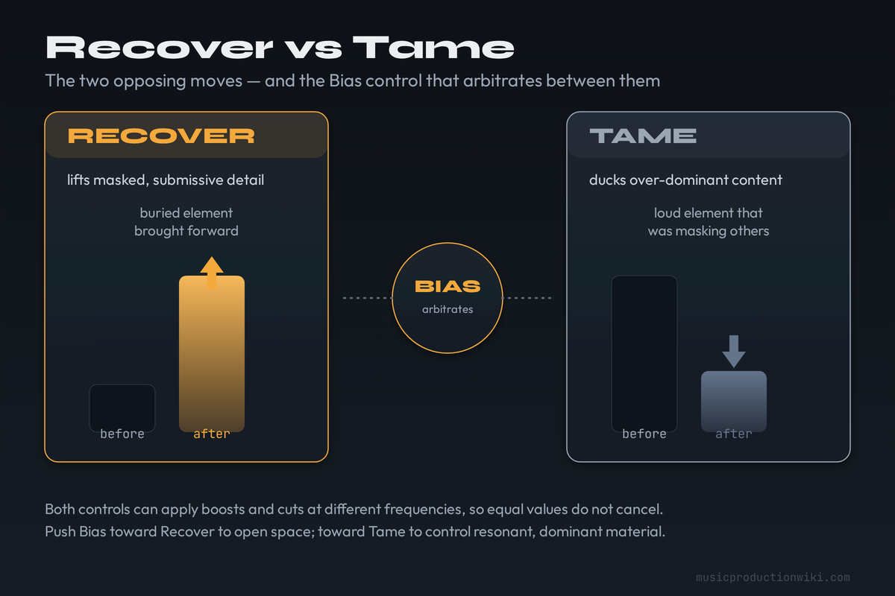
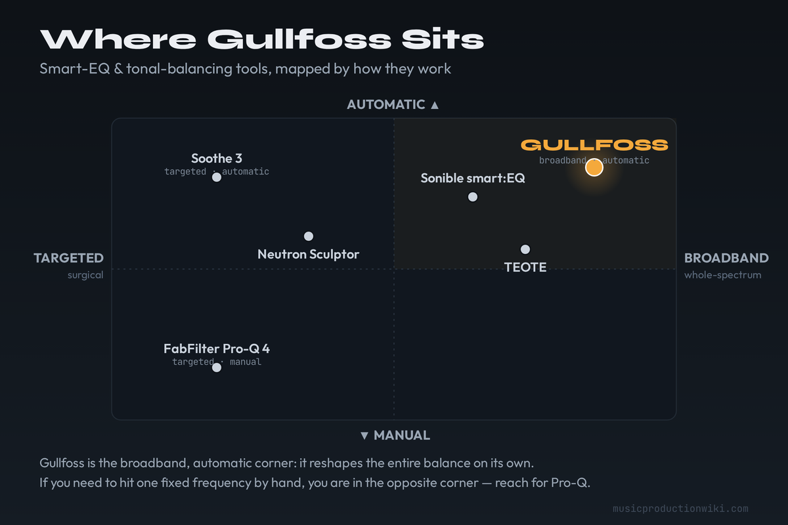

Gullfoss is an adaptive “intelligent” equaliser: a computational model of how we hear decides, in real time, which elements are masking others and reshapes the spectrum — lifting buried detail, ducking dominant frequencies — to maximise clarity. It is a goodizer, not a corrector. Used gently on a bus or master it is transparent and faintly magical; pushed too hard it homogenises everything. It is not a resonance suppressor (that is Soothe) and not a surgical EQ (no frequency selection, no presets, by design). Buy Gullfoss if you regularly want a fast, hands-off clarity lift on a mix or master and you trust yourself to use it with restraint. If you need to target a specific frequency, or you reach for that kind of move only occasionally, the $199 is harder to justify than a manual EQ or a different tool entirely.
- ✅ Natural clarity, no artificial brightness or artefacts
- ✅ “Make it sound better” simplicity — five controls, no curve
- ✅ Adds depth and spatiality; helps mixes translate across systems
- ✅ CPU-efficient; reduces the need for multiband moves
- ✅ Standard, Live and Master editions all in one $199 purchase
- ❌ No frequency targeting and no presets, by design
- ❌ Easy to over-process past ~30%; rewards restraint
- ❌ Not a resonance tamer and not a de-esser
- ❌ Essentially one job — broadband balance
- ❌ $199 is steep for an occasional “clarity” tool
| Axis | Score | Why |
|---|---|---|
| Transparency (sound) | 9.1 | Natural clarity with no artificial brightness or audible artefacts — the genuine strength, and the reason it has aged so well. |
| Ease of use | 9.3 | Five controls and a single “make it sound better” promise — best-in-class accessibility for the result it delivers. |
| Control & precision | 7.0 | No frequency selection, no targeting, no presets by design. The deliberate weak axis: you steer a process, you don’t place a band. |
| Versatility | 8.3 | Mix, master and bus duty, plus Live (tracking) and Master (precision) editions in the box — one job, but covered thoroughly. |
| Value | 8.0 | $199 for the trilogy, frequently on sale, and cheaper than Soothe 3 — held back only by being a one-job tool. |
| Overall | 8.6 | A class-defining goodizer — transparent and effortless — held off a 9 by its lack of control and the truth that it is a finisher, not a fixer. |
What Gullfoss Actually Is — and What It Isn’t
Most plugins borrow their faces from hardware. You open them and you already know the gestures: turn this knob, sweep that band, watch a needle. Gullfoss does almost none of that. It gives you a near-empty display, a moving curve you did not draw, and five sliders with names that read more like moods than parameters. The first time you use it, the honest reaction is mild suspicion. The second time, if the source is right, the suspicion turns into the slightly uncomfortable feeling that the plugin understood your mix better than you did.
Underneath the minimalism is the actual product: Soundtheory’s computational auditory perception model. Rather than analysing the signal as a flat spectrum, Gullfoss models how a human listener perceives the sound — which elements are competing for attention, which are being buried, which are shouting over everything else. From that perceptual picture it continuously redraws an EQ curve, changing its frequency response more than 300 times every second, to make more detail audible without forcing the material into a fixed shape. Because the adjustments are perceptual rather than mechanical, it manages to do this without the overshoot, ringing or smearing that plague heavy static EQ.
The cleanest way to describe what it does is the word producers reach for instinctively: it is a goodizer. It does not correct a defined fault the way a de-esser kills sibilance or a notch removes a hum. It improves the overall balance — clarity, detail, depth, separation — and it decides for itself where the improvement should land. That is the whole pitch, and when it works it is genuinely uncanny: muddy mids open up, buried backing vocals breathe, a flat master gains a sense of front-to-back space. Engineers consistently report that Gullfoss makes mixes translate better across systems, which makes sense — the principles it uses to improve clarity are the same ones your brain uses to adapt to a bad room or cheap earbuds. The shorthand “auto-EQ” sells it short, then: it is less an equaliser that moves by itself and more a perceptual balancer that happens to wear an EQ’s clothes.

Now the two things it is not, because nearly every disappointed Gullfoss user bought it expecting one of them.
It is not a resonance suppressor. That is the single most common confusion, and it matters because the comparison people draw — Gullfoss versus Soothe — is between two tools doing fundamentally different jobs. Soothe hunts harsh, ringing, moving resonances on a specific source and ducks them surgically. Gullfoss does not hunt anything; it rebalances the whole spectrum broadly. If you have a piercing 3 kHz resonance on a vocal, Gullfoss may soften the general region, but it is not the precise instrument for that problem. Soothe is. We cover the distinction in full in our Soothe 3 review; the short version is that they are complementary, and many engineers run both for opposite ends of the same chain.
It is also not a surgical EQ. There is no frequency selection, no band you place, and — deliberately — no presets. You cannot tell Gullfoss to cut 240 Hz by 2 dB. You can only steer the automatic process. If your work demands that kind of control, a manual or dynamic EQ such as FabFilter Pro-Q 4 is the correct tool, and it costs less. Gullfoss is for the move that a manual EQ makes slow and fiddly: the holistic “make the whole thing clearer” pass. If you are still building tonal foundations, our guide to what EQ is and the mixing EQ guide are the better starting points; Gullfoss is a finishing tool that assumes the mix already mostly works.
The Five Controls, Demystified
Soundtheory’s own line is that Gullfoss doesn’t give you a “make it sound better” control — it gives you five of them. They are easy to learn and easy to misuse, so it is worth understanding what each one actually steers.
Recover and Tame are the two primary controls, and they are mirror images. Recover accentuates the elements that are being dominated — the masked, submissive components that are getting buried — and brings them forward. Tame reduces the elements that are too dominant, the ones doing the masking. The crucial, non-obvious detail: both can apply boosts and cuts at different frequencies, which is why setting Recover and Tame to the same value does not cancel out — they act on different parts of the spectrum. In practice you rarely need much of either. A little Recover opens a mix up; a little Tame calms a harsh, forward one.

Bias is the arbiter. Before it can recover or tame, Gullfoss has to decide how to split the spectrum into regions that need lifting and regions that need calming. Bias steers that classification: positive values give Recover more of the spectrum to work on, negative values hand more of it to Tame. Set thoughtfully, Bias behaves a little like a threshold — nudge it so that only the genuinely problematic material gets processed and the rest is left alone. The on-screen meters show you which mode is active moment to moment, which is the fastest way to learn what your settings are really doing.
Brighten is a secondary control, and a frequently misunderstood one. It only has any effect when Recover or Tame are set to a non-zero value — it shapes how the unmasking is distributed, telling the mechanism to prefer lower or higher frequencies. Positive values push the result brighter, negative values darker. It is a remarkably natural way to set the overall tonal balance — useful for matching a genre expectation or compensating for perceived high-frequency loss — without disturbing the clarity the main controls are working to build.
Boost is the global, loudness-aware control. As you raise it, Gullfoss emphasises the low end while pulling back the mids; lowering it does the reverse. Soundtheory describe it as modelling how our perception of frequency balance shifts with level — in the same family as the Fletcher–Munson equal-loudness curves, though they are careful to say their model is more advanced and not literally based on them. Practically, Boost is how you give a quiet mix the perceived weight it would have at higher volume, or thin out a low-heavy one, without it sounding like a crude bass shelf.
Two things beyond the five sliders are worth knowing. Gullfoss has draggable frequency-range limit markers: pull them in and the processing only acts within the band you set — handy for de-essing-style tasks — or swap them over to exclude a band from processing entirely. And there is full sidechain support for more advanced routing. Neither turns Gullfoss into a surgical EQ, but both quietly extend what the automatic engine is allowed to touch. One more design choice that earns trust: Gullfoss matches the perceived output level to the input, so when you bypass to compare, you are hearing the processing — not a sneaky volume bump that makes “on” sound better than “off.”
Does It Actually Deliver?
On the right material, with a restrained hand, yes — convincingly. The strongest, most repeatable result is depth. Feed Gullfoss a competent but slightly flat or congested mix and it tends to pull elements apart front-to-back, giving a sense of space that a static EQ struggles to produce because the masking it resolves is dynamic. Reviewers and engineers reaching for superlatives almost always land on the same observations: clarity without artificial brightness, a reduced need for multiband compression, and better translation between monitoring systems. None of that is marketing fluff; it is the consistent consensus across nearly a decade of use, and it is why the original Gullfoss was named a Sound On Sound Gear of the Year back in 2018 and later included in their “100 plug-ins every engineer should try.”
Where it stops delivering is exactly where you stop being disciplined. Gullfoss is transparent and faintly addictive at low settings, and the temptation is to keep pushing because each nudge seems to help. Past roughly 20–30% of Recover or Tame, the character starts to flatten — the very things that made the mix sound like yours get averaged toward a generic, hyper-clear sameness. This is not a flaw the plugin hides; it is the honest cost of an automatic process, and we deal with it directly in the weak-points section below.
Worth saying for a review: the result is genuinely source-dependent, which is why two engineers can walk away with opposite verdicts. On a dense, congested, masking-heavy mix — layered guitars, stacked vocals, a busy low end — Gullfoss has the most to resolve and the payoff is the most dramatic. On an already-clean, sparse, or deliberately lo-fi arrangement it has far less to do, and the effect can be subtle to the point of “why did I bother.” On highly characterful or intentionally raw material it can even work against you, sanding off the rough edges you wanted to keep. The takeaway is not that it is inconsistent but that it rewards good judgement about when to reach for it; on the material it is built for, the improvement is immediate and hard to unhear.
The most rigorous way to evaluate a processor like this is a real before/after: bounce a dry and a wet pass of the same busy mix and measure the spectral-balance shift and clarity delta. That is the one section of this review we will not fabricate — we never publish an invented measurement. We have the analysis pipeline ready (the same BS.1770 and Welch spectral tooling behind our streaming-master guide), and a measured first-party before/after on a representative master will be added here. Until then, treat the “it adds depth” claim as well-supported consensus rather than a number we are pretending to have. The mechanism is sound and the reputation is earned; the honest framing is that how much it helps depends heavily on the source and on your restraint.
Standard vs Live vs Master — Which Edition You Actually Need
Here is the part that confuses people at checkout and shouldn’t: there is no choice to make. The current Gullfoss is a trilogy — Standard, Live and Master — and all three come in the single $199 purchase. They are not sold individually, and anyone who bought Gullfoss in the past received the extra editions free. So “which edition” is not a buying decision; it is a question of which one to reach for.
Standard is the original and the one you will live in. It is suited to mixing and to most mastering situations, and for the overwhelming majority of users it is the entire product. If you only ever open Standard, you have not missed anything.
Live is the low-latency edition, built for tracking, live mixing and any situation where latency matters. Standard and Master both impose roughly 20 ms of processing latency; Live drops that to around 2 ms by easing off its transient handling, which gives it a subtly different character. If you want Gullfoss on a vocal chain while the singer is monitoring through it, this is the one. One caveat worth knowing: Live is about latency, not load — it is not a “lighter” version, and some users actually measure it working harder than Standard. Outside of tracking and live work, you will rarely need it.
Master is the precision edition. It is optimised for the highest possible quality and an even lower noise floor; its parameters can be adjusted in smaller increments, and the internal listening level of the auditory model has been re-tuned. The trade-off is real: those gains cost more CPU, and Soundtheory explicitly recommend Master for mastering only. If you are finalising a record and want the cleanest possible pass with the finest control, switch to Master; for everyday mix-bus work, Standard is the right call and the lighter load.
That brings up a quiet advantage worth stating plainly: Gullfoss is computationally efficient for what it does. Standard, in particular, is light enough to run on several buses at once without straining a modern system — a meaningful contrast with some heavyweight spectral processors, including resonance suppressors like Soothe, that can tax a session quickly when you stack instances. Master is the deliberate exception, trading CPU for mastering-grade precision, which is exactly why it is reserved for a single instance on the master rather than sprinkled across a mix. If CPU budget is a constant fight in your sessions, the fact that Gullfoss earns its clarity cheaply is part of its appeal. The honest summary: most people only need Standard, Live earns its place the moment you track through it, and Master is a mastering-engineer’s luxury you already own.
Where It Shines — and Where It’s the Wrong Tool
Gullfoss is at its best as a finishing tool on a bus or master. Inserted late in a mix bus or mastering chain — Soundtheory suggest placing it just before the final limiter and any heavy compression or saturation — it does its most flattering work: a competent mix gains clarity, depth and a bit of polish with one gentle pass. It is also excellent on submixes where masking accumulates: drum buses, layered backing-vocal stacks, dense synth groups. Anywhere several elements are fighting for the same perceptual space, the auditory model has something real to resolve. For master-bus and finishing work specifically, it pairs naturally with the moves in our how to master a song walkthrough, and it is a reliable way to add the sense of space discussed in creating depth in a mix.
It is the wrong tool the moment the problem is specific. A single harsh resonance, a fixed boxy frequency, a sibilance issue, a surgical cut — none of these are Gullfoss jobs, and forcing it to do them means turning the controls up until the whole mix suffers to fix one spot. For a moving resonance, reach for Soothe 3. For a fixed-frequency problem or any precise tonal edit, reach for a manual or dynamic EQ. Gullfoss is also a poor first EQ for a beginner who still needs to learn why a frequency is a problem — it hides the mechanics that teach you to mix. It is a tool for someone who already knows what a clean mix sounds like and wants to get there faster on the bus, not a substitute for that knowledge.
The Honest Weak Points
Gullfoss is the most polarising “smart” plugin in music production. People either swear by it or insist it ruins their mixes, and the interesting truth is that both camps are right — they are just describing different settings.
The defining weakness is over-processing. Gullfoss rewards restraint and punishes the heavy hand, and the trap is that the heavy hand feels productive in the moment. Soundtheory could not be more explicit about it: their own support guidance states that Recover and Tame values over 100 are usually too high, and that if the output sounds harsh, you have simply revved the settings too far. Almost every “it wrecked my mix” story is a restraint problem. Used past about 30%, the automatic engine starts homogenising — sanding the character off the mix in pursuit of a clarity that quickly tips into clinical. The fix is free and unglamorous: use less.
The second weakness is the flip side of its greatest strength: no targeting and no presets. By design, you cannot direct it at a specific problem, and there is no starting point to recall. For experienced engineers that minimalism is the appeal. For newer users it can be unsettling — there is nothing to grab, no obvious “right” setting, just a curve you did not draw and your own ears as the only meter that matters.
Third, it is essentially a one-job tool. Critics who call it a “one-trick pony” are not wrong on the facts; they are only wrong about whether that is a problem. Broadband perceptual balancing is one job, but it is a job no other tool does in quite the same transparent way, and Gullfoss does it superbly. Whether one job is worth $199 depends entirely on how often you need that job done. And finally, the point worth repeating because it drives so many returns: it is not a resonance tamer and not a de-esser. If that is the tool you actually need, Gullfoss will disappoint you no matter how well it is built.
The Real Cost — and the Alternatives
Gullfoss is $199 direct from Soundtheory, and that buys the whole trilogy — Standard, Live and Master — with a fully featured free trial available first. It is also discounted often: Soundtheory’s own Black Friday sale has hit 50% off (around $99 — their largest discount to date), and 30–40% codes surface at other points in the year, putting it closer to $120–$140. So while the list price is $199, the effective street price for an unhurried buyer is frequently in the $99–$140 band. Trial it now, and buy on a sale; paying full freight is usually avoidable.
Set against its closest neighbour, that math matters. Soothe 3 lists at $259; Gullfoss lists at $199 and includes three editions in the one licence. For its specific job — broadband, automatic clarity on a bus or master — Gullfoss is effectively the cheaper tool, and the gap widens further on sale. That does not make it “better” than Soothe, which does a different job entirely; it simply means the price is not the thing standing between you and owning it.
The real question is not the number — it is whether Gullfoss is the right tool versus its neighbours, because they solve different problems at different prices. The positioning map below places it on the two axes that actually decide the purchase: how targeted the tool is (surgical versus broadband) and how it works (manual versus automatic).

| Tool | Price (2026) | What it really is | Buy it instead when… |
|---|---|---|---|
| Soundtheory Gullfoss | $199 | Broadband “intelligent” balancer — reshapes the whole spectrum for clarity, hands-off | You want a fast, transparent “make the bus or master clearer” move and trust yourself to use restraint |
| oeksound Soothe 3 | $259 | Targeted dynamic resonance suppressor — hunts and ducks specific moving harshness | Your problem is harsh, ringing, moving resonances on individual sources, not overall balance |
| FabFilter Pro-Q 4 | $179 | Manual surgical EQ with dynamic and spectral bands — you place every move | You need precise, fixed-frequency control and one EQ that also does everyday tonal work |
| Sonible smart:EQ 4 | Varies (perpetual / subscription) | AI tonal-balancing EQ that profiles a track and suggests a curve — per-track, profile-based | You want automatic per-track tonal matching with a visible, editable target curve |
| iZotope Neutron (Sculptor) | Varies (sold within Neutron) | Module-based mixing suite; Sculptor reshapes tone toward a target — more knobs, more setup | You want assistive tonal shaping inside a broader, deeply adjustable mixing suite |
| TEOTE / auto-EQ cohort | Varies (budget) | Automatic spectral-balancing utilities — cheaper, more mechanical, less perceptual finesse | You want the broad idea of automatic balancing on a tight budget and can accept a rougher result |
The pattern is clear once you see the map. If you want surgical, Gullfoss is the wrong column — Pro-Q 4 or Soothe is your tool. If you want automatic and broadband, Gullfoss is essentially alone in how transparently it does it; the tonal-balancer cohort gets close in concept but rarely matches the perceptual smoothness. And if you do a lot of dense mixing, the honest answer is that Gullfoss and Soothe are not rivals at all — they are the two halves of a clarity chain, and plenty of engineers own both. Where Gullfoss fits among the wider field of assistive tools is something we map in the best AI mixing plugins of 2026; for the manual end of the spectrum, the best EQ plugins roundup covers the surgical alternatives.
Who Should Buy It (and Who Shouldn’t)
Buy Gullfoss if you regularly finish mixes or masters and want a fast, transparent clarity-and-depth pass on a bus or master; if you have learned the hard way that you can over-EQ and you trust yourself to keep settings low; if you mix dense material where masking is the recurring enemy; or if you simply value the workflow of one gentle, automatic move over ten manual ones. For that user, Gullfoss is close to indispensable, and the $199 trilogy — especially on sale — is easy money.
Don’t buy Gullfoss if your real need is surgical: a specific resonance, a de-essing job, a fixed-frequency fix. Don’t buy it as your first or only EQ if you are still learning why frequencies clash — it will get you a faster result and a slower education. And don’t buy it expecting Soothe; the two are forever confused and forever different. If you reach for broadband balancing only occasionally, trial it, enjoy it, and consider whether a manual EQ you already own can cover the rare occasion for free.
Is Gullfoss Worth $199?
For the right user, comfortably. Gullfoss earns an 8.6 on the strength of doing one thing better and more transparently than anything else: a perceptual, hands-off clarity lift that adds real depth and helps mixes translate. It loses ground only where it chose to — no targeting, no presets — and on the plain fact that it rewards restraint and punishes excess, which makes it a finisher rather than a fixer. The love/hate reputation resolves the moment you understand that: the people who love it use it gently on the bus, and the people who say it ruined their mix turned it up. Keep it low, put it in the right place in the chain, and it is one of the most quietly impressive plugins you can own. Push it, or buy it for the wrong job, and you will join the other camp. Now that you know which camp is which, the $199 question mostly answers itself.
Try It Yourself: 3 Gullfoss Exercises
These work in the free Gullfoss trial, and the first two transfer to any “smart” balancer you own — the skill matters more than the brand.
- Drop Gullfoss (Standard) on a finished but slightly flat mix and play a busy section on loop.
- Slowly raise Recover from zero. Listen for the moment buried detail opens up and the mix gains depth — that is the sweet spot, usually low.
- Now push Recover well past 30 on purpose, until the mix goes clinical and loses its character. You have just heard both edges; the useful setting lives just before that point. From now on you will instinctively stay below it.
- On a harsh, forward mix, set Recover to zero and raise Tame until the aggression eases. Note how it pulls down what dominates.
- Reset, set Tame to zero, and raise Recover instead until clarity improves. Note how it lifts what was buried — a different path to a cleaner result.
- Now blend small amounts of both and adjust Bias toward whichever you trust more on this material. Watch the meters to see which mode is doing the work. This is the core Gullfoss skill: deciding whether your mix needs lifting, calming, or a little of each.
- Build a short mastering chain on a finished mix. Place Gullfoss before your limiter and any heavy compression or saturation, and dial in a gentle Recover/Tame pass.
- Drag the frequency-range limit markers inward so Gullfoss only acts on, say, the upper mids and highs. A/B against full-range processing — notice how constraining the band keeps the low end untouched and the result more controlled.
- Bypass and compare honestly. Because Gullfoss level-matches input to output, what you hear is the processing, not a volume trick. If “on” only sounds better because it is louder somewhere, you have over-processed — back it off until the improvement is real.
Frequently Asked Questions
For producers and mastering engineers who want a transparent, near-instant clarity boost on a bus or master, yes — Gullfoss does something a static or manual EQ cannot, and with almost no learning curve. The catch is that it is a finisher, not a fixer: no frequency targeting, and it rewards restraint. It earns the $199 only if you regularly want a “make it clearer” move rather than surgical control. It earns its 8.6; whether it earns your money depends on how often you need broadband balancing.
Gullfoss is $199 direct from Soundtheory, and that single purchase includes all three editions — Standard, Live and Master — which are not sold individually. Anyone who previously bought Gullfoss received the extra editions free. It goes on sale frequently (Black Friday has reached 50% off, and 30% codes appear periodically), so if you are not in a hurry it is worth waiting for a discount. A fully featured free trial lets you test it on your own mixes first.
They do opposite jobs and are easy to confuse. Gullfoss is a broadband balancer — it gently reshapes the whole spectrum for clarity, typically on a bus or master. Soothe 3 ($259) is a targeted dynamic resonance suppressor — it hunts and ducks specific harsh, moving frequencies on individual sources. Gullfoss is not a resonance tamer. If your problem is a harsh ringing frequency, buy Soothe; if you want an overall clarity lift, buy Gullfoss. Many engineers own both and use them at opposite ends of the chain — they are complementary, not competing.
No, and that is the most common misunderstanding. Gullfoss has no frequency selection, no bands you place, and no presets by design. You cannot tell it to cut 2.4 kHz. Its five controls steer an automatic process that decides for itself which elements to recover and which to tame, over 300 times a second. If you need to target a specific, fixed frequency, a manual or dynamic EQ such as FabFilter Pro-Q 4 is the right tool; Gullfoss is for the “make the whole thing sound better” move, not the scalpel.
Most people only need Standard, which suits mixing and most mastering. Master is a special edition optimised for the highest quality and an even lower noise floor, with parameters adjustable in smaller increments and a re-tuned internal listening level; it costs more CPU, and Soundtheory recommend it for mastering only. Live is a low-latency edition for tracking and live use. All three are in the one $199 purchase, so you are not choosing at checkout — you just reach for the right one for the job.
Almost always because the settings are too high. Soundtheory themselves state that Recover and Tame values over 100 are usually too high, and that a harsh output means you have pushed too hard. Gullfoss is transparent and even addictive at low settings, but past roughly 20–30% it begins to over-process and homogenise, flattening the character that made the mix yours. Start low, raise Recover or Tame only until clarity improves, then back off. Most “it ruined my mix” complaints are restraint problems, not the plugin.
Recover lifts elements that are being masked or dominated by louder material, bringing buried detail forward; Tame reduces elements that are too dominant and doing the masking. Both can apply boosts and cuts at different frequencies, which is why setting them to equal values does not cancel out. Bias decides, in borderline cases, whether Gullfoss leans toward recovering or taming. Brighten tilts the result toward higher or lower frequencies and only works when Recover or Tame are active. Boost rebalances low versus mid frequencies as a global, loudness-aware control.
On a mix bus or master, Soundtheory suggest inserting Gullfoss just before the final limiter and any heavy compression or saturation, so it balances the spectrum before the loudness stage flattens dynamics. It is equally at home on submixes — drum buses, backing-vocal stacks — where masking builds up. Because it matches output level to input, you can A/B it honestly without being fooled by a loudness change. Use the frequency-range limit markers if you want it to work only on part of the spectrum.
Gullfoss runs as VST, VST3, AU and AAX on 64-bit Windows and macOS. It uses Soundtheory’s own license system, which can be converted to iLok if you prefer, and a fully featured trial is available so you can evaluate it on your own material before buying. The single $199 license includes the Standard, Live and Master editions.